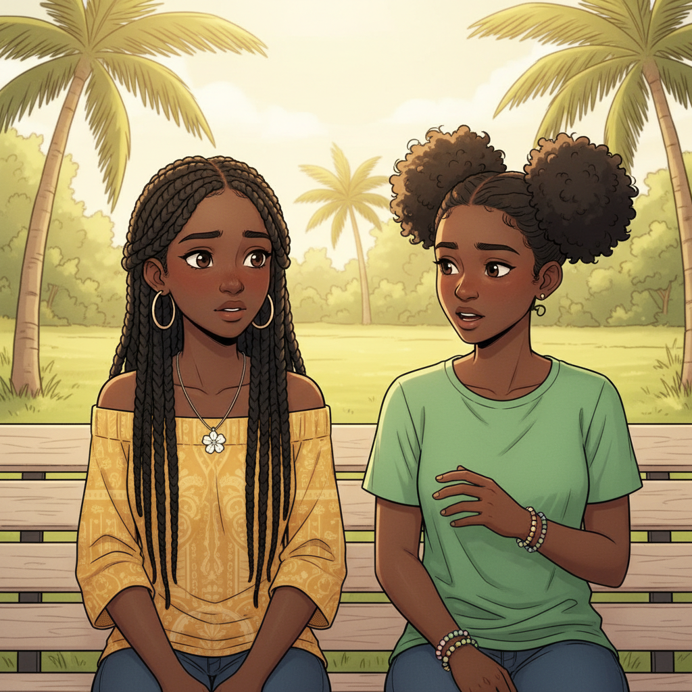
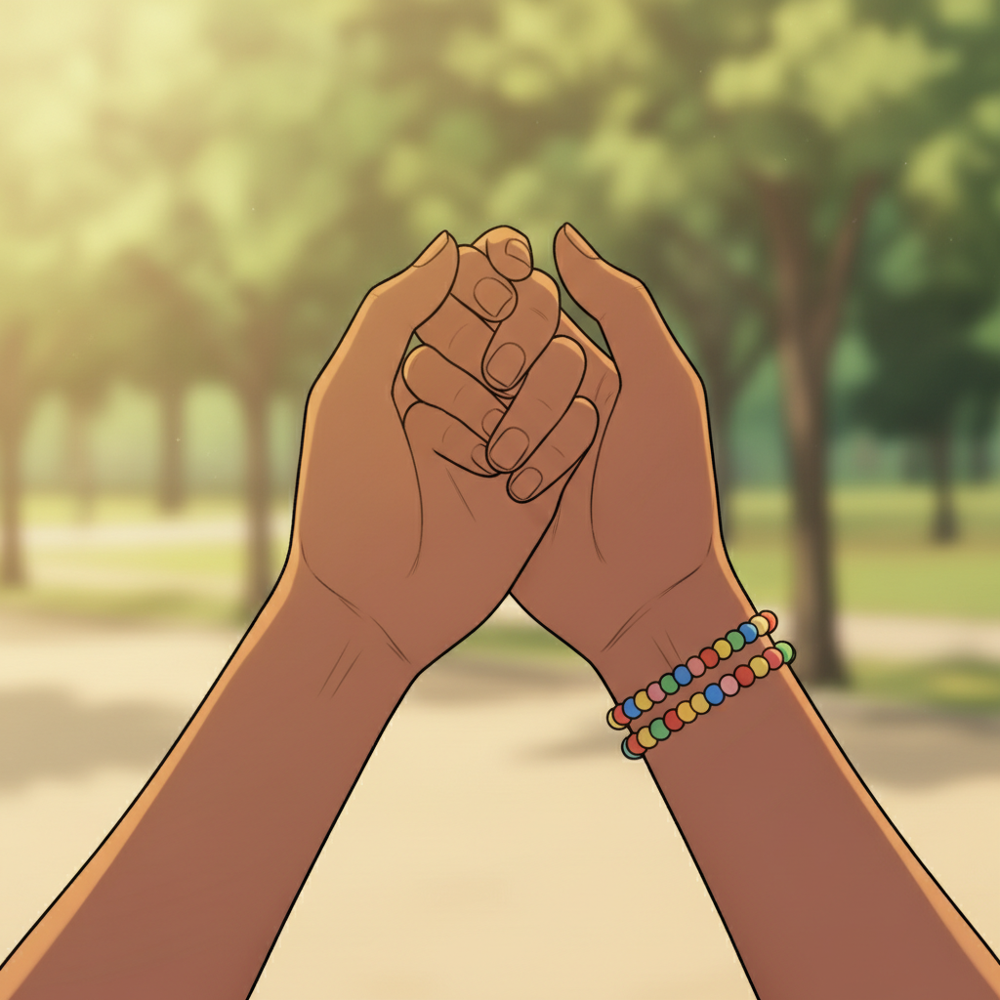
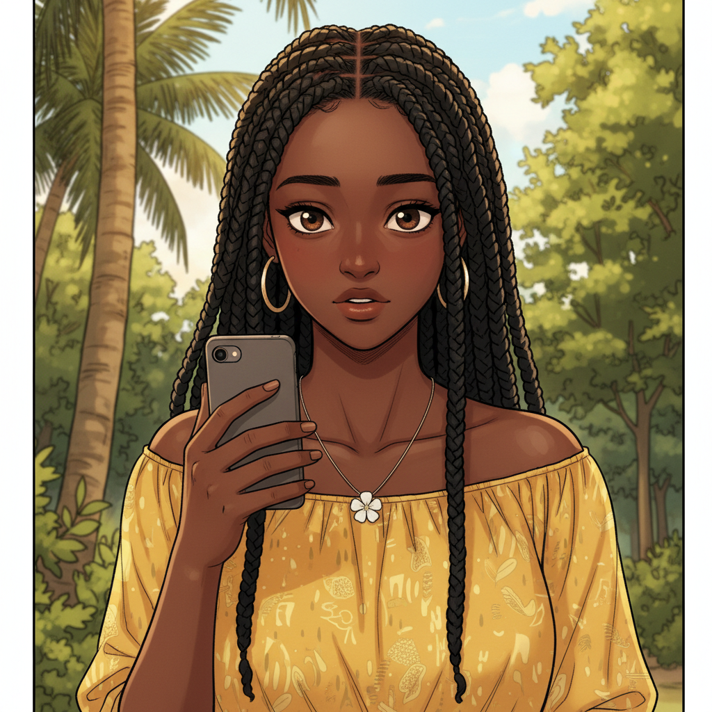
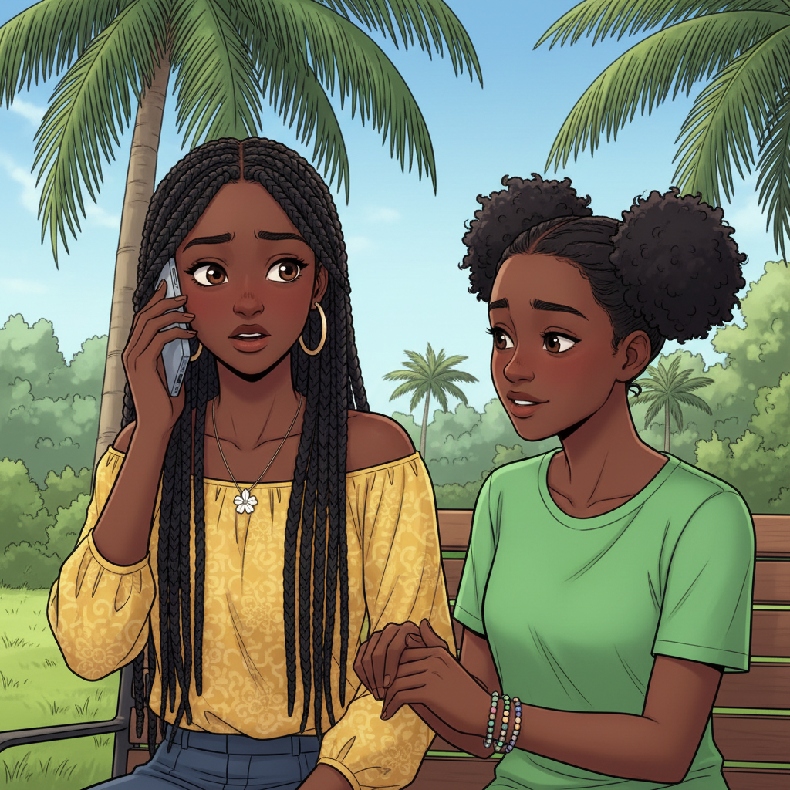
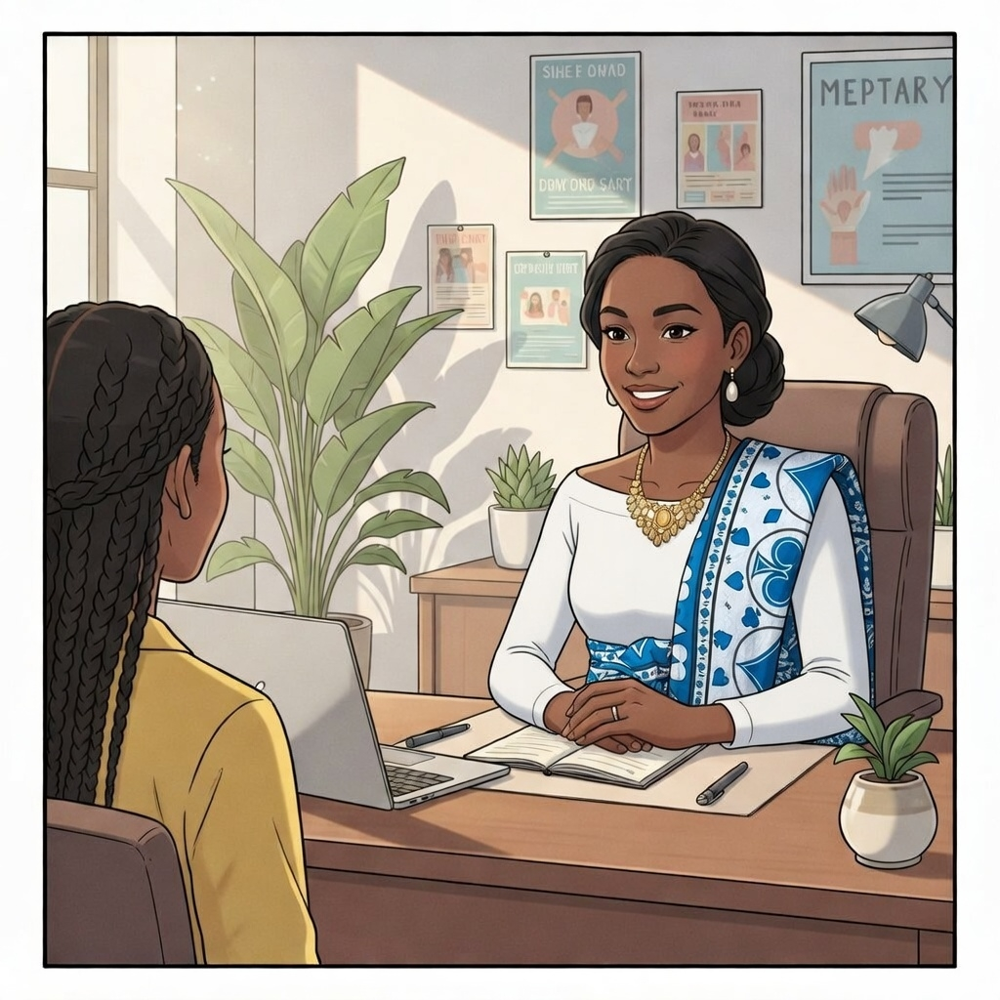
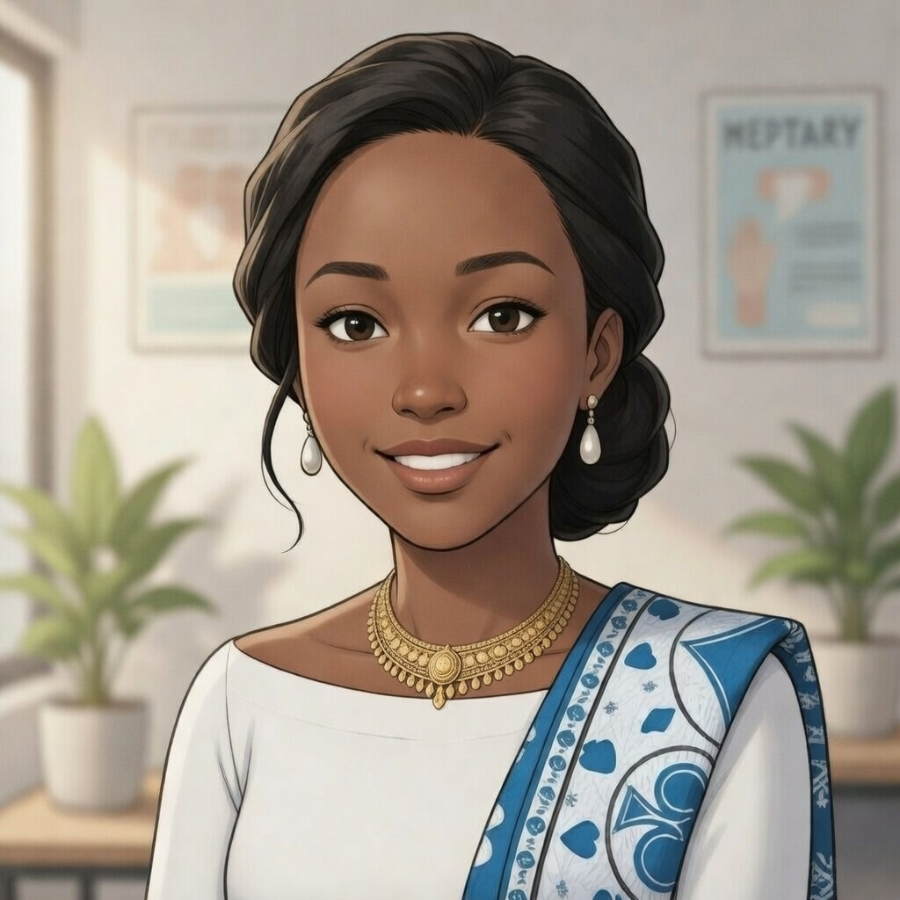
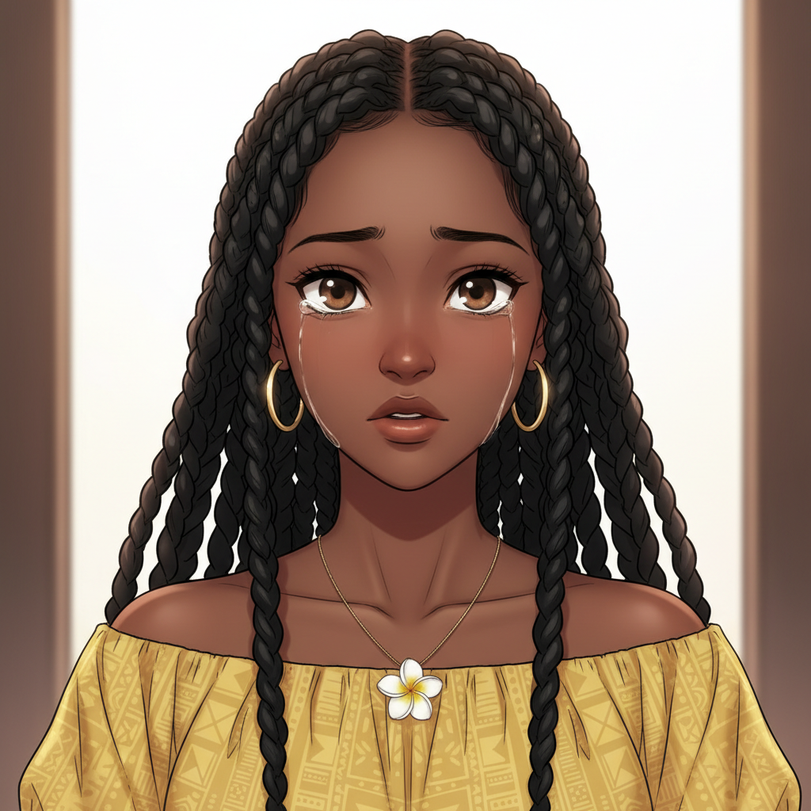
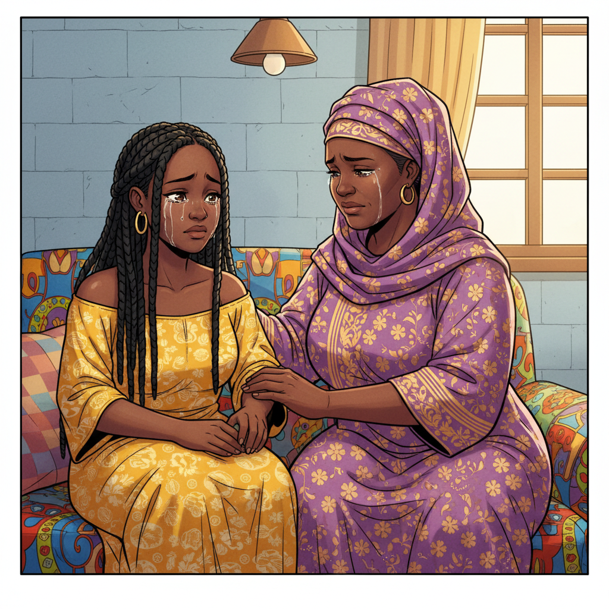
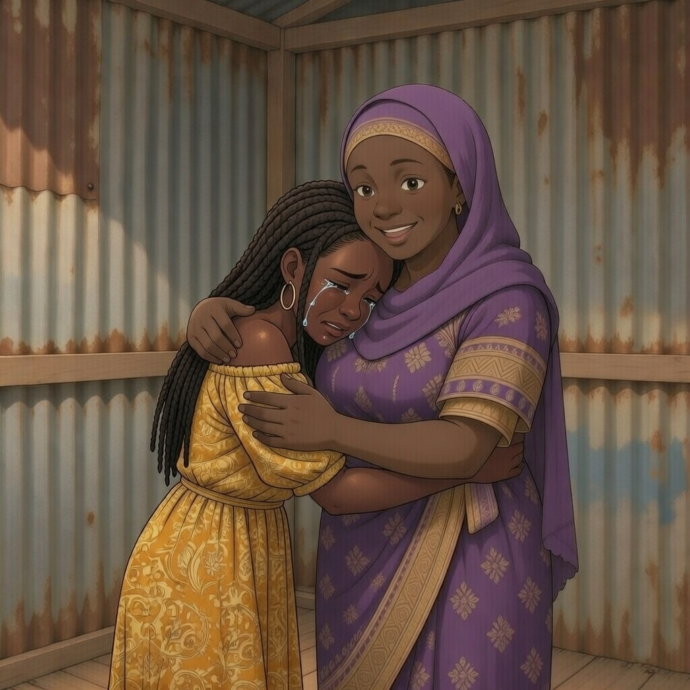

Ce mec, c'est un manipulateur. C'est PAS ta faute.
Y'a une association Mlezi Maore, ils ont un service appelé PSP. Ils accompagnent et orientent les jeunes comme toi.
Ils vont me juger...
Non. Promis. C'est des pros.

Je serai avec toi.

Allez... Tu peux le faire...

Bonjour... Je... j'ai besoin d'aide...

Bienvenue Inaya. Assieds-toi, tu es en sécurité ici., tout ce que tu diras resteras confidentiel

Ce qui t'est arrivé, ça s'appelle du chantage.
Tu n'es pas coupable. C'est LUI le criminel.
La loi te protège.

Je... je suis pas... une mauvaise personne ?
Non Inaya. Tu es une victime. Et tu es courageuse d'être venue.

Pourquoi tu m'as pas parlé, ma fille...
J'avais honte maman... Je voulais juste t'aider...
On va s'en sortir. Ensemble.

Je t'aime. Quoi qu'il arrive.